¿ Quién no recuerda la espada del Rey Arturo en Excalibur , la célebre adaptación al cine de John Boorman ?.

Los estudios de Hollywood encargaron a un taller de Toledo la elaboración de la espada , que no era de hierro , sino de latón.
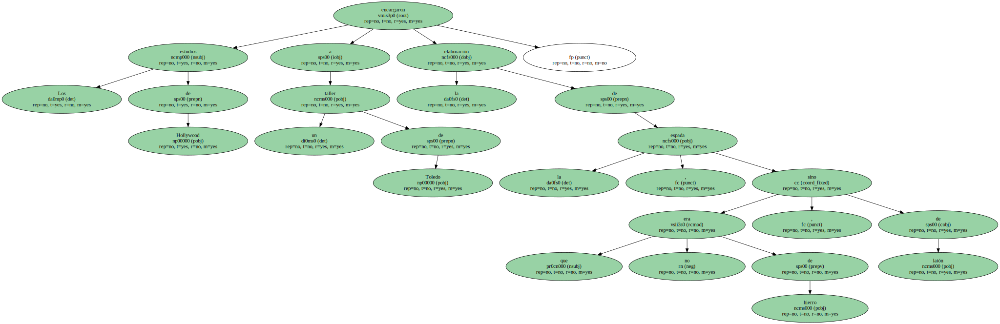El mismo latón que se utiliza para fabricar las monedas de peseta o de duro , y que ahora se usará también con el euro , con una aleación que es uno de los secretos mejor guardados por el Tesoro.
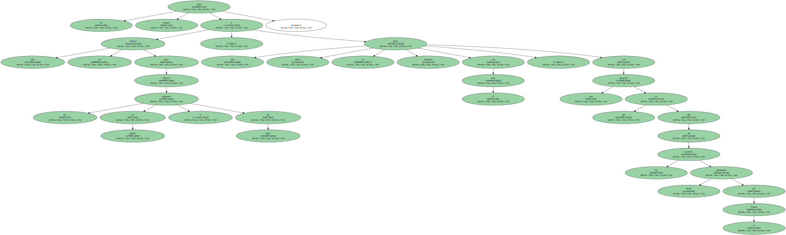Ese latón es la materia prima del negocio de Metales y Derivados , empresa familiar catalana del grupo Matosas que trabaja también con acero y , sobre todo , con productos de cobre.
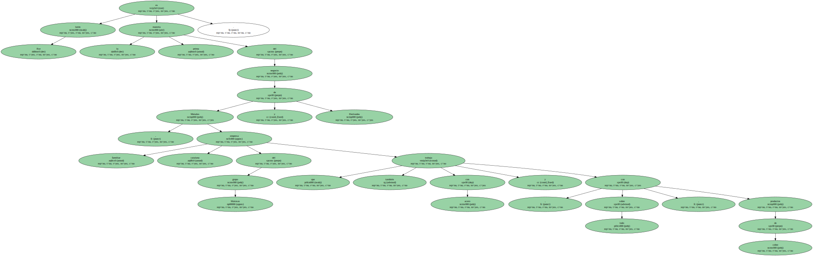Metales y Derivados nació hace más de 50 años en el seno de un grupo que aglutina también empresas como Regaber - - dedicada a proyectos de riego y consumo de agua - - e Industrias Químicas del Vallès ( IQV ) , filial que produce abonos derivados de las sales de cobre.
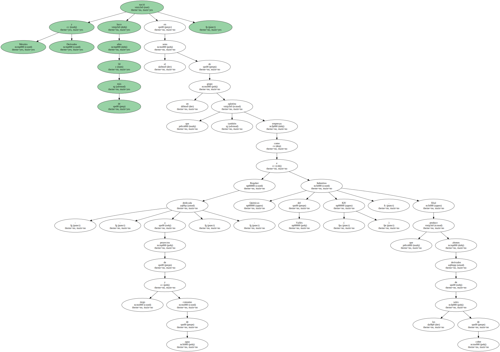Tras pasar unos años en número rojos , la empresa volvió al equilibrio el pasado ejercicio y retomó la senda del crecimiento , con una facturación de 6.500 millones de pesetas y un alza interanual del 30%.
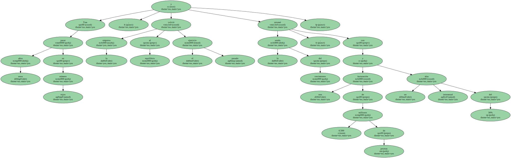Las previsiones de facturación para este año se elevan a 7.500 millones de pesetas.
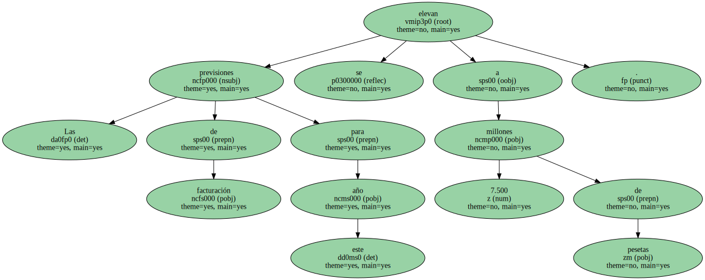Walter Joosten , director general de la compañía , explica que Metales y Derivados " es una típica empresa familiar catalana que en los últimos años ha evolucionado : nadie de la familia participa en los cargos directivos , ha fichado profesionales externos para el consejo de administración y está volcada a los mercados exteriores ".
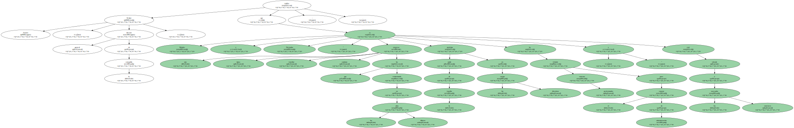En un aspecto sí se parece a la empresa familiar catalana tradicional : no da información sobre la cuenta de resultados.
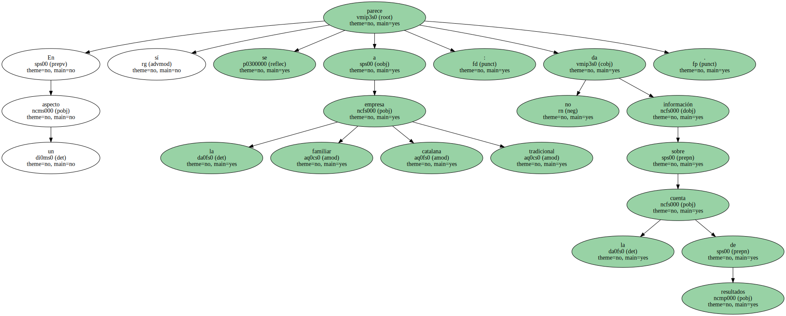La empresa es líder en su sector y entre sus clientes figuran los sectores de automoción , los electrodomésticos - - las neveras tienen en su interior una media de tres kilos en tubos de cobre y latón - - o los instaladores de aire acondicionado.

Ese precisamente es el mercado en el que se ha fijado Metales y Derivados para poner en marcha un proceso de diversificación : la empresa ha iniciado la comercialización de aparatos de aire acondicionado de la marca tailandesa Polar Air.
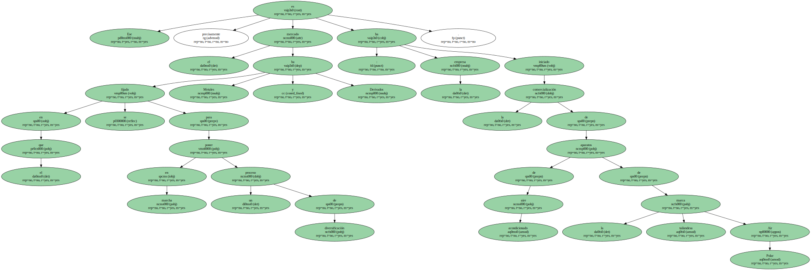Con una plantilla formada por 120 trabajadores , la empresa se ha lanzado también a conseguir representaciones exclusivas de marcas extranjeras para aprovechar su red de distribución : importa metales procedentes de todo el mundo y los distribuye en España.
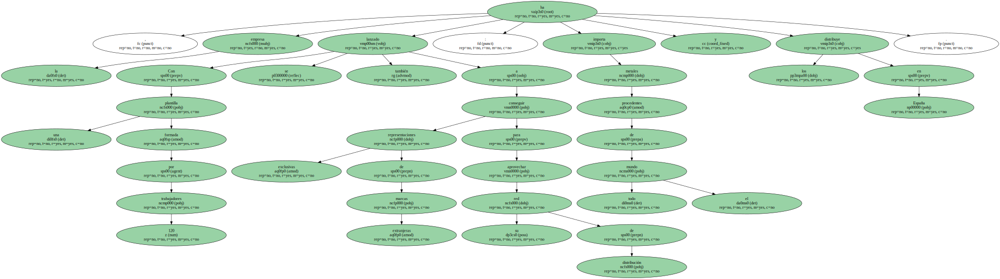La compañía cuenta con almacenes en Barcelona , Madrid , Guipúzcoa , Valencia y Sevilla , y delegaciones en Lisboa , Oporto , Bayona y Perpinyà.
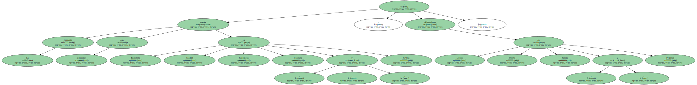Al margen de la diversificación de productos , la compañía ha optado también por ampliar sus canales de distribución a la venta telefónica , y ha puesto en marcha una web para operar también a través de Internet.
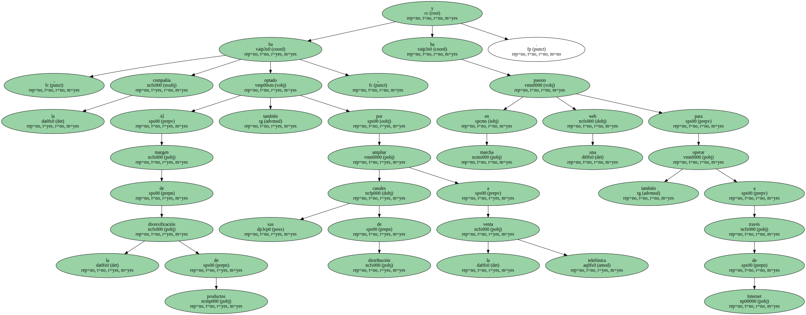" Los dueños de los talleres que utilizan cables de cobre no van a comprar por la Red a corto plazo , pero sus hijos puede que sí cuando se hagan cargo de su empresa " , afirma Joosten.
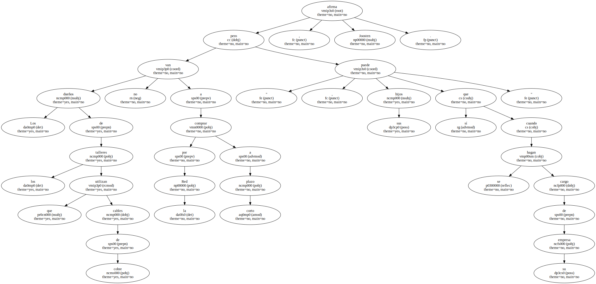